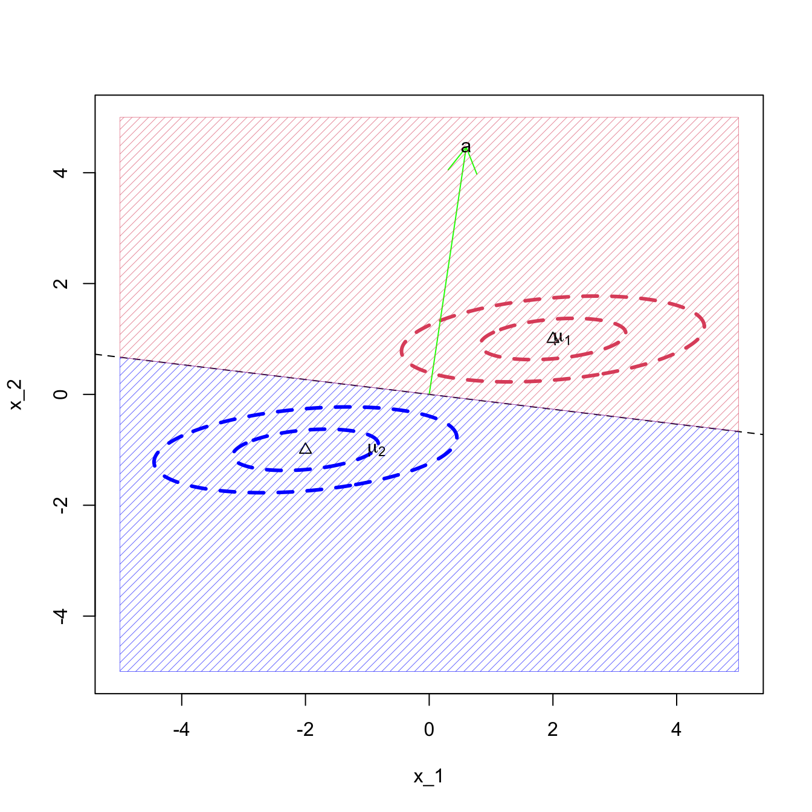

1.1 Maximum likelihood (ML) discriminant rule
Suppose that \(f_1(\mathbf x), \ldots, f_g(\mathbf x)\) are known pdf’s, and lets assume initially that each subject is equally likely to be from any of the \(g\) populations. This is the simplest case but is an unrealistic assumption in practice.
Example 1.1 Consider the univariate case with \(g=2\) where \(\Pi_1\) is the \(N(\mu_1,\sigma_1^2)\) distribution and \(\Pi_2\) is the \(N(\mu_2,\sigma_2^2)\) distribution. The ML discriminant rule allocates \(z\) to \(\Pi_1\) if and only if \[ f_1(z) > f_2(z) , \] which is equivalent to \[ \frac{1}{(2\pi\sigma_1^2)^{1/2}} \exp \left(-\frac{1}{2\sigma_1^2} (z-\mu_1)^2 \right) > \frac{1}{(2\pi\sigma_2^2)^{1/2}} \exp \left(-\frac{1}{2\sigma_2^2} (z-\mu_2)^2 \right). \] Collecting terms together on the left hand side (LHS) gives \[\begin{eqnarray*} && \qquad \frac{\sigma_2}{\sigma_1} \exp \left(-\frac{1}{2\sigma_1^2} (z - \mu_1)^2 +\frac{1}{2\sigma_2^2} (z - \mu_2)^2 \right)> 1 \\ &\iff& \qquad \log \left(\frac{\sigma_2}{\sigma_1} \right)-\frac{1}{2\sigma_1^2} (z - \mu_1)^2 + \frac{1}{2\sigma_2^2} (z - \mu_2)^2 > 0 \\ & \iff & \qquad z^2 \left(\frac{1}{\sigma_2^2} - \frac{1}{\sigma_1^2} \right) + z \left(\frac{2 \mu_1}{\sigma_1^2} - \frac{2 \mu_2}{\sigma_2^2} \right)+ \frac{\mu_2^2}{\sigma_2^2} - \frac{\mu_1^2}{\sigma_1^2} + 2 \log \frac{\sigma_2}{\sigma_1} > 0. \end{eqnarray*}\] Suppose, for example, that \(\mu_1 = \sigma_1 = 1\) and \(\mu_2 = \sigma_2 = 2\), then this reduces to the quadratic expression \[ -\frac{3}{4}z^2 + z + 2 \log 2 > 0.\] Suppose that our new observation is \(z=0\), say. Then the LHS is \(2 \log 2\) which is greater than zero and so we would allocate \(z\) to population 1.
Using the quadratic equation formula we find that \(f_1(z)=f_2(z)\) when \[z = \frac{-1 \pm \sqrt{1+6 \log 2}}{-3/2} = \frac{2}{3} \pm \frac{2}{3} \sqrt{1 + 6 \log 2},\] i.e. at \(z = -0.85\) and \(z = 2.18\). Our discriminant rule is thus to allocate \(z\) to \(\Pi_1\) if \(-0.85 < z < 2.18\) and to allocate it to \(\Pi_2\) otherwise. This is illustrated in Figure 1.1.

Figure 1.1: Discriminant rule for the two Gaussians example
1.1.1 Multivariate Gaussian populations
Now we consider the case of \(g\) multivariate normal populations. We shall assume that for population \(k\) \[\mathbf x\sim N_p(\mu_k, \Sigma)\] i.e., we allow the mean of each population to vary, but have assumed a common covariance matrix between groups.
Two populations
Note that the discriminant rule is linear in \(\mathbf z\).
If we think about the situation where \(\boldsymbol{\Sigma}= \mathbf I\), then we can make sense of this rule geometrically:
- By thinking of the scalar product between two vectors, we can see that \(\mathbf a^\top (\mathbf z-\mathbf h) > 0\) if the angle between \(\mathbf a\) and \(\mathbf z-\mathbf h\) is between \(-90^\circ\) and \(90^\circ\).
- \(\mathbf h= \frac{1}{2}({\boldsymbol{\mu}}_1+{\boldsymbol{\mu}}_2)\) is the midpoint of the two population centroids, and so \(\mathbf z- \mathbf h\) is the vector from \(\mathbf h\) to \(\mathbf z\). \(\mathbf a={\boldsymbol{\mu}}_1-{\boldsymbol{\mu}}_2\) is the vector between the two centroids.
- We classify to population 1 if the angle between \(\mathbf a\) and \(\mathbf h\) is between \(-90^\circ\) and \(90^\circ\).
Example 2
Consider the bivariate case (\(p=2\)) with \(g=2\) groups, where \(\Pi_1\) is the \(N_2({\boldsymbol{\mu}}_1,\mathbf I_2)\) distribution and \(\Pi_2\) is the \(N_2({\boldsymbol{\mu}}_2,\mathbf I_2)\) distribution. Suppose \({\boldsymbol{\mu}}_1 = \begin{pmatrix} c \\ 0 \end{pmatrix}\) and \({\boldsymbol{\mu}}_2 = \begin{pmatrix} -c \\ 0 \end{pmatrix}\) for some constant \(c>0\). Here, \(\mathbf a= \boldsymbol{\Sigma}^{-1} ({\boldsymbol{\mu}}_1 - {\boldsymbol{\mu}}_2) = \begin{pmatrix} 2c \\ 0 \end{pmatrix}\) and \(\mathbf h= \frac{1}{2}( {\boldsymbol{\mu}}_1 + {\boldsymbol{\mu}}_2 ) = \begin{pmatrix} 0 \\ 0 \end{pmatrix}\).
The ML discriminant rule allocates \(z\) to \(\Pi_1\) if \(\mathbf a^\top (\mathbf z- \mathbf h) = \mathbf a^\top \mathbf z> 0\). If we write \(\mathbf z= \begin{pmatrix} z_1 \\ z_2 \end{pmatrix}\) then \(\mathbf a^\top \mathbf z= 2cz_1\), which is greater than zero if \(z_1 > 0\). Hence we allocate \(\mathbf z\) to \(\Pi_1\) if \(z_1 > 0\) and allocate \(\mathbf z\) to \(\Pi_2\) if \(z_1 \leq 0\).
Example 3
A slightly more complicated version of the previous example: we still assume \({\boldsymbol{\mu}}_1=-{\boldsymbol{\mu}}_2\) but make no assumption about \(\boldsymbol{\Sigma}\). Write \(\mathbf a= \begin{pmatrix} a_1 \\ a_2 \end{pmatrix}\) and \(\mathbf h= \frac{1}{2}( {\boldsymbol{\mu}}_1 + {\boldsymbol{\mu}}_2 ) = \boldsymbol 0\). The ML discriminant rule allocates \(z\) to \(\Pi_1\) if \(\mathbf a^\top (\mathbf z- \mathbf h) = \mathbf a^\top \mathbf z> 0\). If we write \(\mathbf z= \begin{pmatrix} z_1 \\ z_2 \end{pmatrix}\) then the boundary separating \(\mathcal R_1\) and \(\mathcal R_2\) is given by \(\mathbf a^\top \mathbf z= \begin{pmatrix} a_1 & a_2 \end{pmatrix} \begin{pmatrix} z_1 \\ z_2 \end{pmatrix} = a_1 z_1 + a_2 z_2 = 0\), i.e. \(z_2 = -\frac{a_1}{a_2} z_1\). This is a straight line through the origin with gradient \(-a_1/a_2\).
For \({\boldsymbol{\mu}}_1 =\begin{pmatrix}1 \\1 \\\end{pmatrix}\) and \(\boldsymbol{\Sigma}= \begin{pmatrix}1&0.9 \\0.9&1 \\\end{pmatrix}\) we find \(\mathbf a= \begin{pmatrix}1.05 \\1.05 \\\end{pmatrix}\), which gives the line \(z_2 = -1 z_1\).

If the variance of the \(x_2\) component is very small compared to the variance of the \(x_1\) component, then we begin to classify solely on the basis of \(x_2\). For example, \({\boldsymbol{\mu}}_1 =\begin{pmatrix}2 \\1 \\\end{pmatrix}\) and \(\boldsymbol{\Sigma}= \begin{pmatrix}1&0.09 \\0.09&0.1 \\\end{pmatrix}\) we find \(\mathbf a= \begin{pmatrix}2.39 \\17.8 \\\end{pmatrix}\), which gives the line \(z_2 = -0.13 z_1\). I.e., a line that is getting close to being horizontal.

1.1.2 More than two populations
When \(g>2\), the boundaries for the ML rule will be piece-wise linear rather than linear.